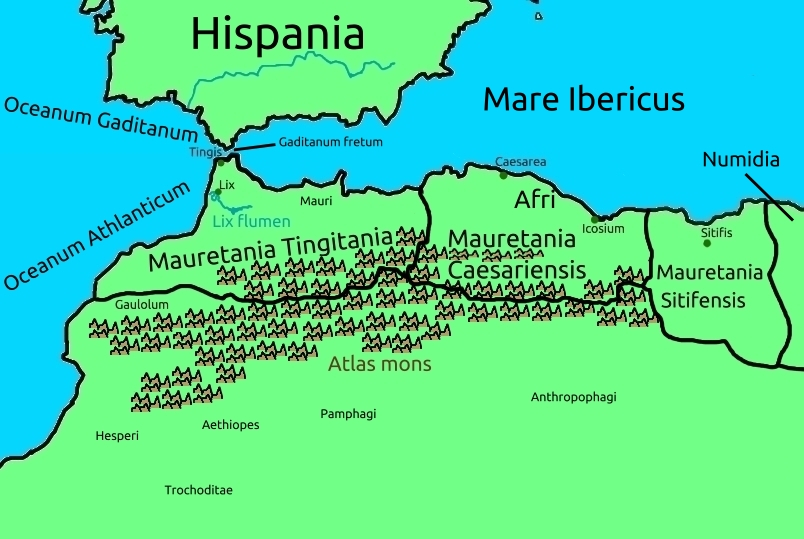

Mauritania and West Aethiopia
In the west, the first province in Africa is Mauretania Tingitania, named as such after it's head town, Tingis. It goes from the Gibraltar Straits (Gaditanum fretum) in the north down south to the area where the Gaulalum people live, being named after an island named "Gauloe" island, off the coast of Ethiopia to the south.
It is also home to the town of Lix, named after the Lix river.
Mauretania itself is named after the color of it's people, the Greeks calling black μαῦρον, "mairon". It is the land of the Atlas, or, Athlans, as they were called, mountains, from which the Athlantic ocean is named.